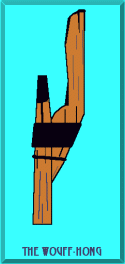

The Wouff-Hong, the Rettysnitch, and the What?
The Wouff-Hong, the Rettysnitch, and the What?"There were three gadgets that were devised by the amateurs of those early days to keep Young Squirts constantly reminded of these three important don'ts of amateur radio.. A Squirt who used too much of what we used to call "Lake Erie Swing," or sent with a slobbery fist, or cluttered up the air with too many CQ's, or garbled his call letters so that they had to be guessed at, was called upon by a committee, the chairman of which was a big brute with a positive manner and who exhibited and explained the workings of an instrument known as an Uggerumph.
"A Squirt who was a band-jumper, or who failed to maintain an intimate acquaintance with a reliable wavemeter, was politely knocked on the head with a base-ball bat, dragged out into the nearest sand lot, and subjected to a surgical operation with a thing called a Rettysnitch. . . .
"Last but by no means least, a Squirt who even thought of using a false call, let alone actually using one, or used profane language on the air or who willfully broke up other legitimate amateur traffic, was taken for a certain kind of ride during which an instrument of torture known as a Wouff-Hong figured very prominently. No Young Squirt ever returned from one of those rides."
 
I quickly learned from a number of victims of the Uggerumph that, unlike the Wouff-Hong and the Rettysnitch, this third instrument of torture for rotten operating may not be an inanimate object. It can chase you around and leaves scars on both body and psyche. It has a mean disposition, so mean that appropriately descriptive terms cannot be repeated in polite company (although I am assured that it loves its mother). Apparently, more modern accounts viewed of the Uggerumph as a creature, while T.O.M. himeself called it an "instrument." Hence, cyborgs, robots, and androids are not out of the question as proper categories for the Uggerumph. It has been referenced, but not pictured, in QST, CQ, and 73, but always by cartoonists and humorists who seem immune to its bite, claw, sting, scratch, gouge, rip, or whatever (or all of the above) (and possibly more).
From ARRL HQ, I received the following note: "Although the Uggerumph was not initially a "thing", in T.O.M.'s writings, he later turned it into one. Although we don't have a photo on the web page, we do have it on display here at HQ in the same case as the Wouff-Hong and Rettysnitch. It looks like a cross between a bear trap and a straight key, with a bone mounted on it (a vertebrae segment)." My thanks go to Dan Miller, K3UFG, Michael Tracy, KC1SX, and Joe Bottiglieri, AA1GW, for a chain of events that quickly brought to me several photographs of the Uggerumph. It is customary at this point to note that the photos are explicit and may be unsuitable for viewing by children.
How the Uggerumph originated was answered in a note accompanying the photographs.
"This mysterious object was made shortly after Hiram Percy Maxim wrote his story "Rotten QRM" in 1917. Whether the device was symbolic of QRM in those days or was supposed to cure its evils is left to the imagination, although strong hints were given by The Old Man."
The "editorial" was reprinted in the December 1940 issue of QST. The word "ugerumf"--while mentioned in this writing, was actually part of poorly sent exchange by a "poor gink."
A portion of the text reads:
"BIRRGRMP BRU ROTARY GE GE UGERUMF OM WITH MY SET RETTYSNITCH SPITTY TONE HIT IN POTIMUS? Now what do you suppose the poor gink was trying to say when he unreeled that? You have to guess a lot in wireless, and how would you guess this?" (TOM)
Yes UGERUMF--not the more popular spelling--UGERUMPH--was used (at least in the 1940 reprint) Perhaps the "ph" modifies this to a noun?
Why Uggerumph (or ugerumf)? From Jim Wade, WB8SIW, I received the following account:
Perhaps some additional information on early spark technology would be helpful. Early Spark Transmitters produced a "damped oscillation." The electrical discharge of a high voltage transformer across a gap in an LC circuit excited the LC circuit, which then oscillated at it's resonant frequency. The process is not unlike ringing a bell. Tapping the bell starts it ringing at it's resonant frequency, and the amplitude decreases over a period. The more often the "clapper" rings the bell, the greater the average amplitude.
Early spark transmitters utilized a "straight" spark gap. The audio frequency one would hear in a receiver was typically a result of the the adjustment of an interruptor or other device at the primary of the transformer. Typically a low, rough, note.
Eventually, radio engineers figured out that one could increase the efficiency of the spark transmitter by placing a rotary gap in the LC circuit. This device was essentially a "spoked" wheel that rotated on a motor shaft (insulated from the motor, of course), that interrupted the spark at a much higher rate (e.g. ringing the bell faster). This improved efficiency and provided a somewhat more pleasing high frequency tone in the receiving operators phones; it also cut through interference easier.
The "zenith" (no reference to "9ZN" intended) of spark technology was the "synchronous" rotary spark gap. This was typically a spark-wheel on the shaft of a motor that rotated at a multiple of the AC frequency at the input of the spark transformer primary (e.g. a multiple of 50 or 60 hz). This device improved efficiency above the non-synchronous rotary spark gap for two reasons:
1) The spark gaps were aligned at the peak of the AC wave form, therefore delivering more power to the LC circuit.
2) The tone was more pleasing to the ear and cut through interference better, since the discharges were evenly synchronized.
All of this having been said, a common "trick" utilized by radio amateurs when sending "30" (di-di-di-dah-di-dahhhhhh) at the close of a QSO was to open the "transmit/receive" switch (usually a big knife witch), allowing the spark to die during this last prosign. The result was an unusual "growl." Likewise, an improperly adjusted rotary gap or an inexpensive "straight" gap typically had a rough, unpleasant note in the receiving operators headphones. Therefore, I suspect, the term "Uggerumph."
By the way, the reason we refer to radiotelegraphy as "CW" is related to spark technology. Unlike early spark transmitters, which produced a "damped oscillation", vacuum tube transmitters produced an "undamped" oscillation or "continuous wave." Therefore, when vacuum tube transmitter technology came into favour in the early '20s, the term "CW" became synonymous with radiotelegraphy. In reality, all modern modes utilize a continuous wave, but we continue to associate "CW" with radiotelegraphy.
Anyway, I hope that explanation of early spark transmitter technology helps.
The remaining mystery is why so many hams believe that the Uggerumph is animated, self-propelled, and no longer needs the oversight of the "big brute" with the "positive manner." After all, TOM clearly refers to the device as an instrument. However, in many stories, the animate take on the role of instruments of fate, of justice, of revenge, of . . .. Likewise, the Uggerumph is secretive and stealthy, attacking without being seen in advance and knowing precisely its target.
So let's do a little history. In 1932, the year of TOM's reference in this note, most equipment still used highly functional but aesthetically crude structures. Amateur radio equipment was no exception. However, by the end of the decade, culminating in the 1939 New York World's Fair, the geometries of art deco styling had given way to the sleek lines of a moving futurism. In automobiles, the Cord opened new vistas in disguising the chaos of the engine compartment under a smooth metallic veneer. Belching steam locomotives with their exposed boilers and steam lines suddenly looked like Buck Rogers space ships that simply preferred to hug a pair of tracks. After WWII, the futurism took on a note of power. For example, the styling that in the 1980s we called "the hatchback" was--for the 1948 Oldsmobile--a "torpedo back." Imagine the possibility of applying a skin of smooth metal over the Uggerumph. Perhaps by the late 1960s, it even has fender fins adapted from the Desoto. By 1990, I can imagine an Uggerumph with perfected stealth technology that evades even our visual senses.
I should not ignore the genius of TOM or his cohorts. The original Uggerumph bears the imprint of "J. H. Bunnell & Co., New York, U.S.A." J.H.'s role in the development is not clear, but his contribution appears to be the "key" to the Uggerumph. Remember that TOM's initial acquaintance with and development of the Uggerumph stems from the era of spark, and sparks have yet to tell their full story. Indeed, they are lightning quick and do not sit still to tell tales. Could spark have infused something animate into the device? Or could TOM have been so far ahead of his time as to develop the same technology that was to make the Mars' Sojourner a self-guiding rover? The technology in the photo of the Uggerumph appears to be solid state.
But is the Uggerumph more than manufactured, more than programmed? Is it self-evolving? The eminent science publisher, Hugo Gernsbach issued many reports of self-replicating and evolving "things" that appeared to be objects--but that were more. If the Uggerumph could self-replicate or even breed, then it might also self-evolve. I have heard rumors of devices called electromagnetic hunters, "E. H." for short. One breed of them becomes riled whenever it encounters especially bad and illegal operations. There must be more than one of them, because the breed has been spotted (but not identified for what they are) all across the country. They present themselves as mild-mannered makers of speeches at ham conventions. Generically, we call the breed the "Rile-E-H." If I interpret their behavior correctly, they have elevated torture for rotten operating to a new level. The original Uggerumph would send its victim to a doctor for repairs. The new generation of the Uggerumph, the Rile-E-H, now requires that victims go to someplace worse--the office of a lawyer.
This line of history and speculation, of course, cannot be proven. It can, however, serve as a warning to the same group of rotten operators against whom TOM railed. In the night, in the dark, in the mist may lurk an Uggerumph to wreak havoc upon those who infect the amateur bands with foul operating practices and plain stupid activities.
I have been asked how the Uggerumph, Rettysnitch, and Wouff-Hong do their work of exacting fair and just punishments upon those who foul the airwaves with stupid, unethical, and/or illegal operations. My answer must be speculative, since no one upon whom these instruments/creatures of justice have performed their surgery will confess to exactly what happened. Perhaps they remember only the pain, but not the details. If so, that may be for the best, since amateur radio justice is firm and effective, but not vengeful. Speculatively then, we might let the shape of the instrument be the guide to its use.
Remember that the Uggerumph essentially is a treatment for uncaring ignorance--whose proper name is "stupidity." The Uggerumph is obviously a shocking hole-cutter, the depth being determined by the severity of the offense. Some hams describe the Uggerumph as a "bear trap," something capable of taking a bite out the victim. Although I do not see hinges in the photographs, neither do I see the hinges in the jaws of folks who speak to me. So a biting device or creature is certainly an allowable view of the Uggerumph. The size of the bite of which the Uggerumph is capable indicates use on the main torso, with the exact position being optional. However, since young squirts were on the mind of TOM, I suspect that the most common placement is one that would prohibit sitting for a while. For all its ferocity, the Uggerumph is the gentlest of the torturing trio.
"The Rettysnitch. . .is used to enforce the principles of decency in operating work," according to the 1930 ARRL Handbook. The Rettysnitch is a much more specific instrument, also able to make holes, but smaller and deeper ones. It is capable of trepanning and even brain scrambling--or perhaps descrambling those whose operating habits begin scrambled. However, it can also be used on the key (or mike) arm to inflict a tatoo of scar tissue. Since it is the instrument of ethical conduct, it might also be used for heart reversal, and the Rettysnitch's missing teeth suggest that it might have encountered some very hard hearts in its past.
According to the same 1930 ARRL Handbook, "The Wouff-Hong is amateur radio's most sacred symbol and stands for the enforcement of law and order in amateur operation." The Wouff-Hong's nearest analog is the old-fashion but still effective can opener. Now every can opener requires an initial insertion point, and (if you picture the human anatomical form) you can choose between upper and lower points. The object is to open up the miscreant and expose his evil to himself. This requires the subject to be supine and all opening to be done on the front side, where the victim can indeed see the results: the exposure of his own evil. The beauty of the wood Wouff-Hong lies in the fact that it leaves splinters in places from which they cannot be removed. Thus is the scoundrel reminded for life of his misdeeds and what lies ahead if any one of them should ever be repeated.
History has it that the applications of the three instruments are unimaginable. However, I have spent my life imagining the unimaginable. Should protocol dictate or should you be too overcome with dread, you may destroy this note. However, you may also keep it in secret so that, if someone really needs to know, you can tell him what is in store if he does not change his operations for the better.
Updated 04-15-2000, 04-18-2000, 04-27-2000. © L. B. Cebik, W4RNL. Data may be used for personal purposes, but may not be reproduced for publication in print or any other medium without permission of the author.